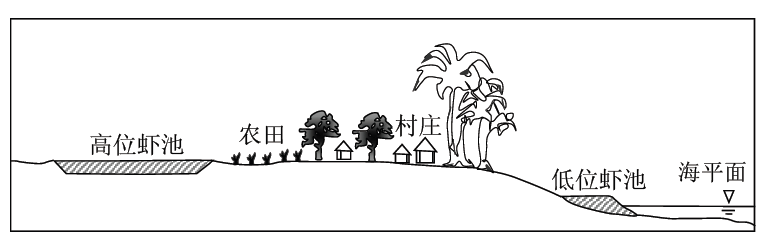

2016广东高考地理部分（全国卷1）
幻灯片切换效果
None - Fade - Slide - Convex - Concave - Zoom
选择班级
幻灯片样式
Black (default) -
White -
League -
Sky -
Beige -
Simple
Serif -
Blood -
Night -
Moon -
Solarized
我国是世界闻名的陶瓷古国，明清时期，“瓷都”景德镇是全国的瓷业中心，产品远销海内外，20世纪80年代初，广东省佛山市率先引进国外现代化陶瓷生产 线，逐步发展成为全国乃至世界最大的陶瓷生产基地。2003年，佛山陶瓷主产区被划入中心城区范围，陶瓷产业向景德镇等陶瓷产地转移。据此完成1—3题。
1.与景德镇相比，20世纪80年代佛山瓷业迅速发展的主要原因是
A.市场广阔
B.原材料充足
C.劳动力素质高
D.国家政策倾斜
解析
20世纪80年代初，我国东南沿海（珠江三角洲）地区的改革开放政策优势，使得佛山市能够率先引进国外现代化陶瓷生产线，促进了佛山瓷业迅速发现，故选D。
考查方向
本题以佛山瓷业的发展为背景材料，考查不同区域地理环境的差异及工业区位条件，考查获取和解读地理信息，调动和运用地理知识，基本技能的能力。考查描述和阐释地理事物、地理基本原理与规律的能力。考查论证和探讨地理问题的能力。
解题思路
注意抓住时间，20世纪80年，结合材料“20世纪80年代初，广东省佛山市率先引进国外现代化陶瓷生产线，逐步发展成为全国乃至世界最大的陶瓷生产基地。” 则可知，这是由于20世纪80年代初，珠三角的改革开放的政策优势，国家政策倾斜使得 佛山市率先引进国外现代化陶瓷生产线。
易错点
本题容易错选成A选项，市场在一定程度上可以决定经济活动的类型和规模，但本题应注意联系材料，不能受平时训练的影响。
2.促使佛山陶瓷产业向外转移的主要原因是佛山
A.产业结构调整
B.原产料枯竭
C.市场需求减小
D. 企业竞争加剧
解析
根据材料信息，可知“2003年，佛山陶瓷生产区被划入中心城区范围，陶瓷产业向景德镇等陶瓷产地转移”，表明佛山陶瓷产业向外转移的主要原因是受产业结构调整的影响，促使陶瓷产业向外转移，故选A。
考查方向
本题以佛山陶瓷产业的转移为题，考查影响产业转移的因素。考查获取和解读地理信息，调动和运用地理知识，基本技能的能力。
解题思路
材料“佛山陶瓷主产区被划入中心城区范围，陶瓷产业向景德镇等陶瓷产地转移”，这说明原来佛山陶瓷产业区变成发展以第三产业为主的中心城区，即产业结构调整促使佛山陶瓷产业向外转移。
易错点
影响产业转移的因素有①劳动力因素；②内部交易成本因素；③市场因素；④其他因素：国际经济形势的变化、国家政策的调整、土地规模和价格、环境污染等。
3.景德镇吸引佛山陶瓷产业转移的主要优势是
A.资金充足
B.劳动力成本低
C.产业基础好
D.交通运输便捷
解析
根据材料，可知景德镇在明清时期是“瓷都”，为全国的瓷业中心，表明景德镇的陶瓷产业历史悠久，基础好，故选C。
考查方向
本题考查影响产业转移的因素，考查获取和解读地理信息，调动和运用地理知识，基本技能的能力。
解题思路
解答本题，需要结合材料，根据材料提取关键信息，材料中“明清时期，‘瓷都’景德镇是全国的瓷业中心”，可以推断景德镇发展陶瓷产业的基础好。
易错点
相比之下，佛山比景德镇的经济发达，资金充足；而陶瓷产业并非劳动密集型产业，劳动力的成本影响较小；佛山位于珠江三角洲地区，海陆交通便利；本题应选择景德镇的优势条件。
自20世纪50年代，荷兰的兰斯塔德地区经过多次空间规划，形成城市在外，郊区在内的空间特征：该区中间是一个接近3000平方千米的“绿心”——乡村地 带；四个核心城市和其他城镇呈环状分布在“绿心”的周围，城镇之间设置不可侵占的绿地，四个核心城市各具特殊职能，各城市分工明确，通过快速交通系统连接 成具有国际竞争力的城市群，近20年来，该地区城镇扩展程度小，基本维持稳定的城镇结构体系。据此完成4—6题。
4.兰斯塔德地区通过空间规划，限制了该地区各核心城市的
A.服务种类 B.服务等级 C.服务范围 D.服务人口解析
根据材料信息，可知兰斯塔德地区规划的四个核心城市具有特殊的职能，各城市分工明确，表明兰斯塔德地区通过空间规划，限制了该地区各核心城市的服务种类，故选A。
考查方向
本题考查城市的服务功能。考查获取和解读地理信息，调动和运用地理知识，基本技能的能力。
解题思路
通过对材料信息理解，不可侵占的是绿地，而并非城市。根据材料中各城市有特殊职能，分工明确，表明各城市的服务种类不同，通过空间规划，限制了该地区各核心城市的服务种类。
易错点
本题容易错选成C选项，受材料“城镇之间设置不可侵占的绿地”的影响，部分学生对材料信息理解错误，认为“不可侵占”限制了服务范围。
5. 兰斯塔德空姐规划的实施，显著促进该地区同类产业活动的
A.技术创新
B.空间集聚
C.市场拓展
D.产品升级
解析
根据材料，兰斯塔德空间规划中，各城市分工明确，使同类产业活动集中在一个地区，能够显著促进该地区同类产业活动的空间集聚，故选B。
考查方向
本题考查城市规划及产业集聚，考查获取和解读地理信息，调动和运用地理知识，基本技能的能力。考查描述和阐释地理事物、地理基本原理与规律的能力。
解题思路
注意材料中“特殊职能”“分工明确”，得出各城市的产业活动并不相同，再结合题干“显著促进”，可推断B选项正确。
易错点
本题难点在于考生对选项中名词的理解，通过材料信息，可知城市具有特殊的职能，且分工明确，这就限制了同类产业活动的市场拓展。而技术创新和产品升级是产业活动在空间集聚后。
6. 兰斯塔德空间规划的实施，可以
A.提高乡村人口比重
B.降低人口密度
C.促进城市竞争
D.优化城市用地结构
解析
根据材料，兰斯塔德的空间规划，该地区形成了城市在外，郊区在内的空间特征。且城镇呈环状分布在乡村地带周围，有快速交通系统连接。这种空间规划，可以优化城乡用地结构，故选D。
考查方向
本题考查城市化及区域发展，考查获取和解读地理信息，调动和运用地理知识，基本技能的能力。考查描述和阐释地理事物、地理基本原理与规律的能力。
解题思路
解答本题，需要紧扣材料，根据材料信息，排除错误选项即可。
易错点
根据材料信息，可知近20年来，该地区城镇扩展程度小，结构稳定，不会提高乡村人口比重，A错误，B错误；各城市分工明确，竞争较小，C错误。
贝壳堤由死亡的贝类生物在海岸带堆积而成，在沿海地区经常分布着多条贝壳堤，标志着海岸线位置的变化，图1示意渤海湾沿岸某地区贝壳堤的分布。据此完成7—9题
7.在任一条贝壳堤的形成过程中，海岸线
A.向陆地方向推进
B.向海洋方向推进
C.位置稳定
D. 反复进退
解析
题干设问任一条贝壳堤的形成，根据材料信息，贝壳堤是由死亡的贝类生物在海岸带堆积而成，需要海岸线的位置稳定，在能够形成图示贝壳堤，故选C。
考查方向
本题以贝壳堤为背景材料，考查外力作用对地理环境的影响。考查获取和解读地理信息，调动和运用地理知识，基本技能的能力。考查描述和阐释地理事物、地理基本原理与规律的能力。
解题思路
在任意一条贝壳堤的形成过程中，如果海岸线一直都是往海洋方向推进，贝壳早就被掩埋起来的，它一定是相对稳定的，海水把它冲刷到岸上，最终形成贝壳堤。
易错点
本题容易错选成B选项，图中显示贝壳堤从3500多年前到1800多年前都是在往海上延伸的，说明海岸线在往海洋方向推进。但题干强调任一条贝壳堤，若海岸线向海洋方向推进，则不能够形成贝壳堤。
8.沿岸流动的海水搬运河流入海口处的泥沙，并在贝壳堤外堆积。由此
A.形成新的贝壳堤
B.加大贝壳堤距海岸线的距离
C.形成河口三角洲
D.迫使河流改道
解析
根据题干，可知海水搬运泥沙在贝壳堤外堆积，泥沙的不断堆积，会形成新的海岸，从而使贝壳堤距海岸线的距离变大，故选B。
考查方向
本题考查外力作用对地理环境的影响。考查获取和解读地理信息，调动和运用地理知识，基本技能的能力。考查描述和阐释地理事物、地理基本原理与规律的能力。
解题思路
沿岸流动的海水搬运河流入海口处的泥沙，并在贝壳堤外堆积，形成新海岸，不断堆积，从而使得贝壳堤距海岸线的距离加大。
易错点
形成新的贝壳堤需要贝壳，而题干中堆积物质为泥沙，A错误；题干中表述海水搬运入海口处的泥沙，在贝壳堤外堆积，并没有说明泥沙在河口处堆积，故不能判断是否否形成河口三角洲或迫使河流改道，C错误；D错误。
9.河流冲积物是该地海岸线变动的物质来源。多条贝壳堤的形成说明河流入海口
A.位置稳定，泥沙沉积量小
B.位置稳定，泥沙沉积量大
C.位置多次变动，泥沙沉积量小
D.位置多次变动，泥沙沉积量大
解析
读图可知，多条贝壳堤的形成表明海岸线的位置多次变动。根据题干，河流冲积物是海岸线变动的物质来源，多条贝壳堤的形成表明河流携带的泥沙沉积量大，故选D。
考查方向
本题考查流水作用对地理环境的影响，考查获取和解读地理信息，调动和运用地理知识，基本技能的能力。考查描述和阐释地理事物、地理基本原理与规律的能力。
解题思路
河流冲积物是该地海岸线变动的物质来源，多条贝壳堤的形成表明海岸线位置多次变动，河流带来的泥沙沉积大，形成多条贝壳堤。
易错点
多条贝壳堤形成，表明泥沙沉积量大，A错误，C错误；图中贝壳堤的位置变化，表明河流入海口位置多次变动，B错误。
磷是土壤有机质的重要组成元素，也是植物生长的营养元素。土壤水分增加有利于磷累积，气温升高和流水侵蚀会减少土壤中磷累积量。图2示意我国四川西部某山地东坡土壤中磷累积量的垂直变化，据此完成10~11题。
10.磷高累积区是
A.高山草甸带
B.高山冰雪带
C.山地针阔叶混交林带
D. 常绿阔叶林带
解析
读图可知，磷高积累区大致在海拔4000m以上。根据材料，可知该地区为四川西部山地，4000m上的植被最有可能为高山草甸带，故选A。
考查方向
本题考查山地垂直地带性。考查获取和解读地理信息，调动和运用地理知识，基本技能的能力。考查描述和阐释地理事物、地理基本原理与规律的能力。
解题思路
先读图，判断磷高积累量的海拔高度，再结合当地的自然地理环境特征，推断磷高积累区可能分布的自然带即可。
易错点
四川西部山地的基带应为常绿阔叶林，山地针阔叶混交林的海拔低于4000m，高山冰雪带的海拔较高，均不符合题意。
11.与磷高累积区相比，该山坡2000~3000米处
A.大气温度较低
B.生物生产量较低
C.土壤含水量较低
D. 地表径流量较小
解析
根据材料，可知土壤水分增加有利于磷积累，2000-3000米处的磷积累量较小，推断应与土壤含水量较低有关，故选C。
考查方向
本题考查自然地理环境的整体性，考查获取和解读地理信息，调动和运用地理知识，基本技能的能力。考查描述和阐释地理事物、地理基本原理与规律的能力。
解题思路
与磷高积累区相比，该山坡2000-3000米处，磷积累量较低，根据材料提示“土壤水分增加有利于磷积累”，山坡2000-3000米处磷积累量较低，说明土壤含水量较低。
易错点
材料信息“气温升高和流水侵蚀会减少土壤中磷累积量”，可知气温越高，磷积累量越高，径流量越大，磷积累量越小，可推断，A错误，D错误。
阅读图文材料，完成下列要求。（24分）
茉莉喜高温，抗寒性差，25℃以上才能孕育花蕾，32—37℃是花蕾成熟开放的最适温度。喜光。根系发达。生长旺季要求水分充足，但土壤过湿不利于其根系发育。开花季节，于天黑之前采成熟花蕾，花蕾开放吐香时间从20时左右至次日10时左右，是将茶叶染上花香、制作茉莉花茶的最佳时间。
广西横县种植茉莉花历史悠久。改革开放后，茉莉花茶市场需求旺，横县开始扩大茉莉种植规模。1983年，在广西首次举办的茉莉花茶评比中，横县茉莉花茶一举夺魁。至20世纪90年代，我国茉莉花茶生产重心开始从东南沿海地区向横县转移。
2000年，横县获“中国茉莉之乡”的称号。目前，横县的茉莉鲜花和茉莉花茶产量占全国总产量80%以上，占世界总产量60%以上。图5示意横县在广西的位置和范围。

36.(1).与江苏、浙江相比，说明横县有利于茉莉生长的气候条件。（6分）
横县位于北回归线以南，高温期较长；高温期湿度较高（降水较多），（而江浙一带或梅雨期过湿，或伏旱期过旱且有时超过37℃的高温）；冬季受寒潮影响较小，气温较高。
解析
气候条件包括热量、降水、光照等，与江苏、浙江相比，横县的纬度耕地，相比之下热量条件更充足；且冬季受寒潮影响小，气温高；此外，根据材料信息可知土壤过湿不利于茉莉生长，江浙一带受梅雨影响，过湿，且伏旱天气气温过高。
考查方向
本题考查农业区位选择及不同区域地理环境的差异。考查获取和解读地理信息，调动和运用地理知识，基本技能的能力。考查描述和阐释地理事物、地理基本原理与规律的能力。
解题思路
根据材料信息，可知茉莉抗寒性差，考虑冬季寒潮的影响；32-37℃是最适宜温度，考虑江浙一带伏旱天气的影响；根据经纬网信息，联系纬度对气候的影响。
易错点
①审题不清，将所有农业区位条件都答上；②遗漏要点，没有考虑不同季节气候条件对茉莉生长的影响。
(2).横县地形以河流冲积平原为主，茉莉主要种植在平原地势较高的旱地上。试解释冲积平原地势较高的旱地有利于茉莉种植的原因。（8分）
冲积平原地势较高的旱地，平坦便于种植；排水良好，土壤不会过湿；离河较近，便于灌溉，且不易受洪水侵袭；土层深厚且疏松，有利于茉莉根系发育；冲积平原土壤肥沃。
解析
根据材料信息“生长旺季要求水分充足，但土壤过湿不利于根系发育”，可知地势较高的旱地排水条件好，土壤不会过湿；冲积平原靠近河流，便于灌溉，地势较高不易受洪水侵袭；冲积平原土壤肥沃、土层深厚，利于茉莉根系发育。
考查方向
本题考查地形条件对农业生产的影响，考查获取和解读地理信息，调动和运用地理知识，基本技能的能力。考查描述和阐释地理事物、地理基本原理与规律的能力。
解题思路
冲积平原土壤肥沃、土层深厚，利于茉莉的生长发育；地势较高的旱地，排水良好，土壤不过湿，便于茉莉根系发育。回答时应将冲积平原和旱地联系起来，综合分析。
易错点
部分学生答题时仅从旱地角度分析土壤不能过湿，并没有分析平原地区有利于茉莉种植的条件。
(3).目前横县县城集聚了100多家茉莉花茶厂。分析横县县城集聚众多茉莉花茶厂的原因。（6分）
（茉莉花茶生产应该接近茉莉花产地。）横县茉莉花生产规模大，花源供应充足且品质佳；县城交通便利，便于收集茉莉花（蕾）；县城基础设施较好，便于生产组织。（离南宁市较近，便于产品销售。）
解析
根据材料，可知横县是“中国茉莉之乡”，茉莉花茶厂在此集聚接近茉莉花产地，茉莉花的品质好，原料充足；县城交通便利，便于收集茉莉花，基础设施好，便于生产。
考查方向
本题考查工业区位选择，考查获取和解读地理信息，调动和运用地理知识，基本技能的能力。考查描述和阐释地理事物、地理基本原理与规律的能力。
解题思路
本题应从工业的区位条件回答，即横县有吸引茉莉花茶厂集聚的优势，主要从原料的数量、品质、交通、基础设施、市场等角度分析。
易错点
①审题不清晰，本题部分学生容易答成集聚的优势；②遗漏要点，忽略基础设施、交通等条件。
(4).请在下列两个问题中，选择其中一个问题作答。如果多做，则按所做的第一个问题计分。（4分）
问题①：说明横县茉莉花茶产业的发展经验对我国一些贫困县脱贫致富的启示。
问题②：为以茉莉种植为基础的横县经济进一步发展提出建议。
问题①：因地制宜，发挥特色农产品优势；扩大生产规模以达到规模效应和影响（实行专业化生产）；推进农产品的加工业，延长产业链，增加附加值。 问题②：加强茉莉种植和茉莉花茶生产的科研投入，确保茉莉花茶的品种优势；加大茉莉花其他产业化应用的研发；开发新产品；拓展旅游文化市场，实现经营多元化。
解析
问题①横县依据自身特色，发展特色农业，扩大了生产规模，推动了农产品加工工业的发展，延长了产业链，增加了附加值，这是横县的发展经验，也是我国一些贫困县脱贫致富的启示。 问题②横县应加强科技投入，确保茉莉花茶的品牌优势，利用“中国茉莉花之乡”的优势，开发新产品，发展旅游，实现多元化经营。
考查方向
本题考查农业可持续发展，考查获取和解读地理信息，调动和运用地理知识，基本技能的能力。考查描述和阐释地理事物、地理基本原理与规律的能力。
解题思路
若选择问题①，应突出因地制宜，发挥当地农业优势，推进农产品的加工业，延长产业链，增加附加值。若选择问题②，应从现有产业基础上加大科技投入，增强品牌效益，实现经济多元化发展。
易错点
本题设问简单，回答时注意答案要点清晰，语言规范即可。
阅读图文材料，完成下列要求。（22分）
某科考队8月考察堪察加半岛，考察中发现，勘察加半岛北部发育苔原，南部生长森林；东西向气候区域差异显著；大型植食性和肉食性野生动物数量较少，但冬眠杂食性且善捕鱼的熊的数量较多；大量来自海洋的鲑鱼溯河流而上，成为熊的重要食物。图6示意勘察加半岛的地形。
(1).说明勘察加半岛地形对气候区域差异的影响。（6分）
山脉大致呈南北向，阻挡季风，形成多雨区和雨影区；地形高差大，形成气候垂直差异。
解析
根据图中等高线可知，勘察加半岛上山脉大致呈南北向，阻挡季风，在迎风坡形成多雨区，在背风坡形成多雨区；地形高差大，气候垂直差异明显。
考查方向
本题考查地形对气候的影响，考查获取和解读地理信息，调动和运用地理知识，基本技能的能力。考查描述和阐释地理事物、地理基本原理与规律的能力。
解题思路
该半岛属于季风气候，地形对气候的影响主要从对季风的影响，使东西两侧的气候差异大，山地海拔高，气候垂直差异大。
易错点
对勘察加半岛的地形判断错误，不能正确判断地形对气候的影响；地形主要影响气候中大气环流、降水、气温等。
(2).分析勘察加半岛大型植食性和肉食性野生动物数量较少的原因。（10分）
纬度高，植物生长缓慢，食物供应量少；环境空间差别大，适宜生存的空间小；冬季寒冷漫长，生存条件恶劣。
解析
勘察加半岛的大型动物少，表明该地区大型动物的食物少，该地区纬度高，植被生长缓慢；环境空间差别大，适合大型动物生存的空间小，冬季寒冷，生存条件恶劣。
考查方向
本题考查自然地理环境的整体性。考查获取和解读地理信息，调动和运用地理知识，基本技能的能力。考查描述和阐释地理事物、地理基本原理与规律的能力。
解题思路
勘察加半岛大型植食性和肉食性野生动物数量少，说明该地区适宜动物存在的条件恶劣，应从气候、食物、生存空间等方面分析。
易错点
部分学生会从食物和生存环境的角度分析，但容易遗漏要点，例如冬季寒冷漫长，生存条件恶劣。
(2).某科考队员欲近距离拍摄熊，推测他在甲地选择拍摄点的理由。（6分）
河流附近，熊出没的机率大；山地地形，且有森林，便于隐蔽；降水较少，晴天较多，利于拍摄。
解析
读图可知，甲地位于河流沿岸，熊出没的机率大；甲地位于半岛南部，森林分布，便于隐藏；甲地地处夏季风的背风坡，降水少，晴天多，利于拍摄。
考查方向
本题考查自然地理环境的整体性，考查获取和解读地理信息，调动和运用地理知识，基本技能的能力。考查描述和阐释地理事物、地理基本原理与规律的能力。
解题思路
本题设问简单，首先得有熊，甲地河流中有吸引熊的鱼类，其次考虑安全性问题，森林分布，便于隐藏；然后考虑拍摄的天气条件，拍摄日期为夏季，位于背风坡，晴天多。
易错点
根据材料提示“大量来自海洋的鲑鱼溯河流而上，成为熊的重要食物”，甲地成拍摄点，甲地是熊出没的地方，也就是鲑鱼河流而上必经地，“勘察加半岛北部发育苔原，南部生长森林”，有森林，便于隐蔽，位于夏季风的背风坡，降水较少，晴天较多，利于拍摄。
【地理——选修3：旅游地理】
莫干山近年以“民宿”开发而蜚声中外，“民宿”是指利用农民空闲房屋，为消费者提供配套乡野休闲、养生的新型酒店模式。莫干山民宿旅游起步于2007年，受政府政策鼓励，逐步形成了以吸引高消费人群为主体的旅游目的地。某民宿经营者说：“目前来乡里居住及游玩的多数来自大城市，以家庭及情侣为主，他们不仅来吃农家饭，还喜欢和我们聊天，喜欢下田上山体验农活。”2015年，莫干山已有民宿200多家，年营业收入达1.7亿元，图7示意莫干山的位置。
42.分析莫干山名宿旅游快速发展的原因。
莫干山高质量的民宿旅游产品迎合了高消费人群回归自然、体验乡野田园生活的心理需求；长三角高消费人群规模大；莫干山与主要客源地距离适中，靠近主要交通线，交通便捷；得到当地政府的大力扶持。
解析
根据文字材料提示，“民宿”是指利用农民空闲房屋，为消费者提供配套乡野休闲、养生的新型酒店模式。莫干山名宿旅游产品新颖、符合高消费人群心理需要，又得到政府大力支持，结合图中信息，可知莫干山距离上海、南京、杭州等大城市近，距离客源地近，高消费人群规模大，交通便利。
考查方向
本题考查旅游资源开发评价，考查获取和解读地理信息，调动和运用地理知识，基本技能的能力。考查描述和阐释地理事物、地理基本原理与规律的能力。
解题思路
解答本题，需要结合材料信息，从莫干山的旅游资源、客源市场、交通、基础设施、政策等角度分析说明即可。
易错点
本题设问简单，部分学生可能要点分析不全面，语言不规范。
【地理——选修5：自然灾害与防治】（请回答52题）
古乡沟位于青藏高原东南部，上游地区有6条冰川，沟谷有厚度达300多米的堆积物。中游河谷狭窄。冰川末端深入森林带。每年夏秋季常有冰川泥石流暴发，其破坏力在世界上是罕见的。
43．分析古乡沟夏秋季节冰川泥石流破坏力巨大的原因。
深厚的松散堆积物提供了异常丰富的物质条件；夏秋气温高，冰川强烈消融，此时，降水较为丰沛，冰川融水与降水叠加，提供了极为丰沛的水源；狭窄的河谷，巨大的落差，积累了巨大的能量。
解析
根据材料，可知该地区上游有6条冰川，夏季冰雪融水量大，降水多，为泥石流的形成提供了丰富的水源条件；沟谷有厚达300多米的堆积物，为泥石流提供了物质条件，加上山区河谷狭窄，落差大，水流急，为泥石流发生提供了动能。
考查方向
本题考查自然灾害危害大的原因，考查获取和解读地理信息，调动和运用地理知识，基本技能的能力。考查描述和阐释地理事物、地理基本原理与规律的能力。
解题思路
先审题，回答冰川泥石流破坏力巨大的原因，应从该地区泥石流发生的原因入手，夏季水量大，堆积物多，落差大，使泥石流的破坏力大。
易错点
本题容易误答成泥石流形成的原因，也可能会遗漏夏季降水丰富这个答案要点。
【地理——选修6：环境保护】（请回答53题）
我国部分沿海地区人们为了追求更大的经济效益，在陆上修建高位养虾池（图8）。高位虾池底部铺设隔水层，引海水养虾，养虾过程中要投饵料、换海水，废水多经地表流入海洋。引水、蓄水、排水过程都有渗漏。
44.分析高位虾池对当地环境的不利影响。
养殖过程海水渗漏，导致地下淡水咸化、附近表土盐碱化，影响农作物和地表植物的生长，影响当地居民的生活。废水造成附近海域污染、海水富营养化
解析
根据材料，可知高位虾池养殖过程中，有海水渗漏，会导致地下水变咸，土壤盐碱化加重，不利于农作物的生长；废水经地表流入海洋，会导致附近海域海水富营养化。
考查方向
本题考查环境保护的有关知识，考查获取和解读地理信息，调动和运用地理知识，基本技能的能力。考查描述和阐释地理事物、地理基本原理与规律的能力。
解题思路
解答本题，关键要理解“引水、蓄水、排水过程都有渗漏”，推断会导致土壤盐碱化，而废水流入海洋，又会导致海水富营养化。
易错点
本题设问简单，回答时注意语言规范，条理清晰。